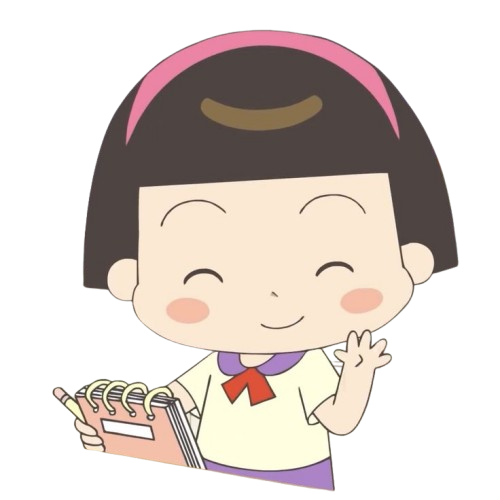
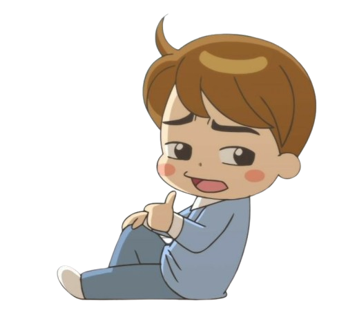
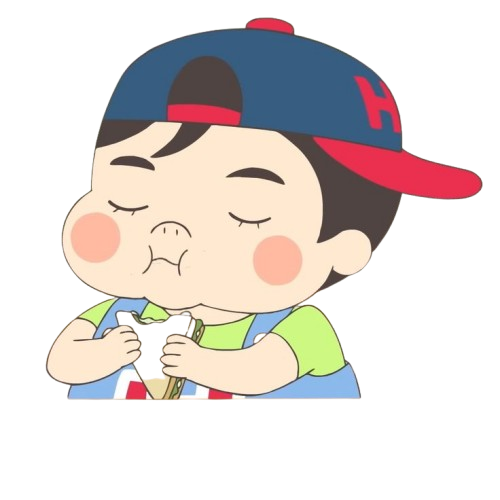
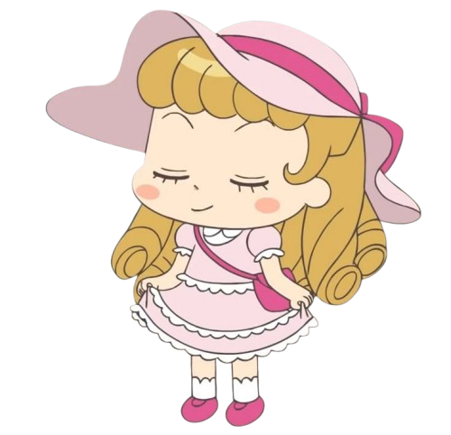
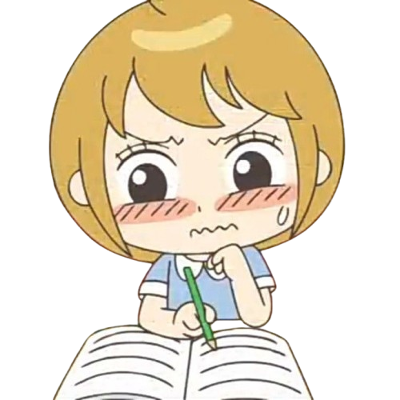

Jadoo's Friends
Kim Minji
ᯓ Karakter Minji kebalikan banget dari Jadoo — kalem, pintar, rajin, dan sering jadi penengah kalo Jadoo mulai berulah. Dia juga sering bantu Jadoo keluar dari masalah, walaupun akhirnya malah ikut kena marah juga Minji sering dibilang “ibu kelompok” karena dia paling dewasa di antara teman-temannya. Tapi jangan salah, dia juga punya sisi lucu dan bisa ngelawak bareng yang lain.
Lee Yunseok
ᯓ Yunseok itu teman Jadoo yang suka jail, tapi engga jahat. Dia sering banget ngegodain Jadoo sampai si Jadoo marah besar Tapi di balik sikap isengnya, dia sebenernya peduli juga sama Jadoo dan teman-temannya. Kadang dia bantu diam-diam, walau pura-pura cuek. Di beberapa episode, dia bahkan keliatan cemburu jalo Jadoo deket sama cowok lain 😳
Kim Seondol
ᯓ Doldol adalah teman sekelas Jadoo yang usil banget tapi hati baik. Badannya gemuk, pipi merah, pakai kaus hijau, celana pendek biru, dan topi merah dengan huruf “H”. Dia cerewet, suka ngeganggu Jadoo dan teman-temannya, tapi tujuannya cuma buat seru-seruan, engga jahat. Doldol juga suka makan, kadang narsis, dan percaya diri meski kadang insecure soal tubuhnya. Dia dekat sama Jadoo, pernah suka sama Minji tapi tetep teman baik, dan selalu bikin suasana kelas rame dan lucu. Pokoknya, Doldol itu karakter yang usil tapi bikin cerita Hello Jadoo tambah seru.
Lee Eunhui
ᯓ Lee Eunhui itu cewek yang suka pamer dan pengen selalu jadi pusat perhatian. Dia sering ngejek Jadoo dan temen-temennya, soalnya ngerasa dirinya lebih keren. Eunhui suka banget sama Yoon Sungi dan pengen jadi penyanyi.
Meski sering berantem sama Jadoo, mereka juga kadang akur, sih. Pokoknya, Eunhui tuh cewek yang ga takut bersaing.
Jang Seonghun
ᯓ Jang Seonghun itu cowok yang pendiem, baik hati, dan perhatian. Dia suka sama Jadoo, tapi nggak pernah berani ngomong langsung. Seonghun lebih suka nunjukin perasaannya lewat tindakan, kayak ngasih perhatian kecil atau bantuin Jadoo. Dia juga punya siput peliharaan bernama Green. Meskipun nggak seaktif temen-temennya, Seonghun selalu ada buat Jadoo kalau dia butuh bantuan.
❮❮ ❯❯